Green is the new black

Community
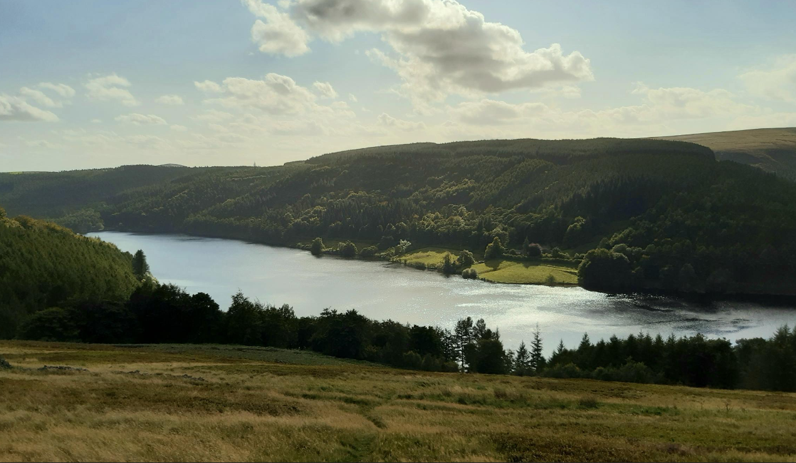 This is the community page, this is where Mancunians have gone in their local area, if you want to post a good bike route or a good place to walk the dog, feel free to post
Keep in mind this comment section is monitored
Information
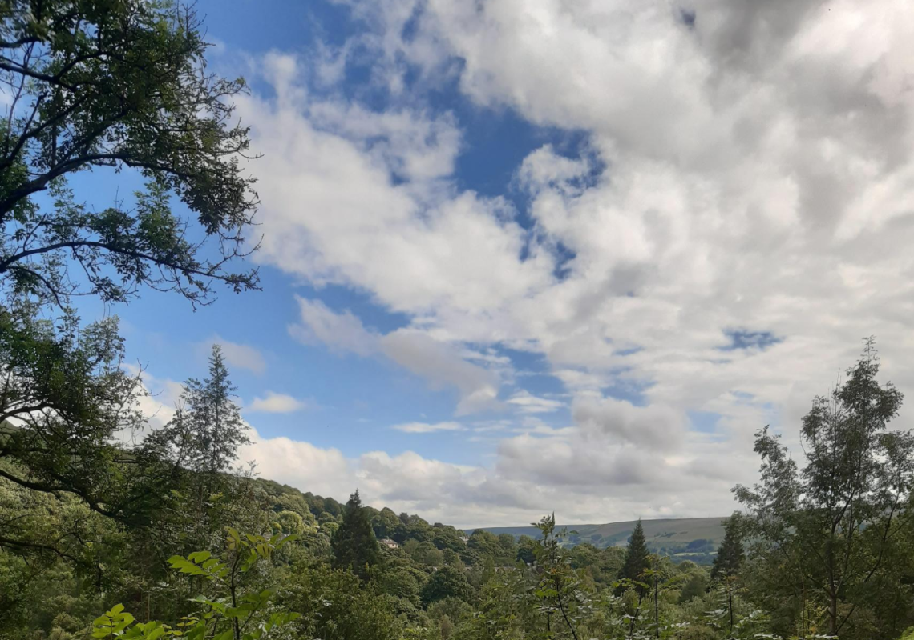Why go outdoors?
This a page based off personal expirence, facts and why you should try exploring more of Manchester and it's greenspaces, if you already hike, bike or run, other pages will be of better use.
The benefits of hiking are clear to me as someone who was previously overweight, it's not ideal for to feel insecure about their weight, so if you are, I know personally that you don't have to be. I was able to lose it by hiking 20 minutes outside the Stockport area and visiting country parks, an hour away is the peak district, which you can see in the photos I took on this website.
In my opinion, as someone able to lose weight without changing my diet, food isn't the key to losing weight, it's just a small peice in the larger puzzle, I only exercised once a week for 4 or 5 hours, walking around beautiful mountians and reserviors, it definitely feels better than dieting and most people would have 4 hours of leisure in a week, as well as the mental and finanicial benefits may be better than gyms.
There are plently of articals that show the scientic correlation between being outside and stress relief, happiness as well as better physical/mental health, the US national Libarary of medicine agrees, they say there is strong link between neighbourhoods with good greenspace and health, this is because the existance of greenspace encourages physical excercise, aestetically, greenspace looks nicer than suburban areas so people are more compelled to go for a walk or cycle through them, the mere sight of trees have been shown to be a positive stimulus for the brain.
Another important factor is sleep, physical excercise and greenery can make you sleep better and easier, scientically, the department of evironmental conservation in New York has compiled many schollarly articles on the topic.
Sources: USNationalLibararyofMedicine.gov DepartmentOfEvironmentalConverationNewYork.gov
I hope this would convince you of the importance of greenspace, why it's ideal for you to try going outdoors and understand why I think it's so important for you to try an outdoor hobby like cycling, the benefits will show over time.
Top places
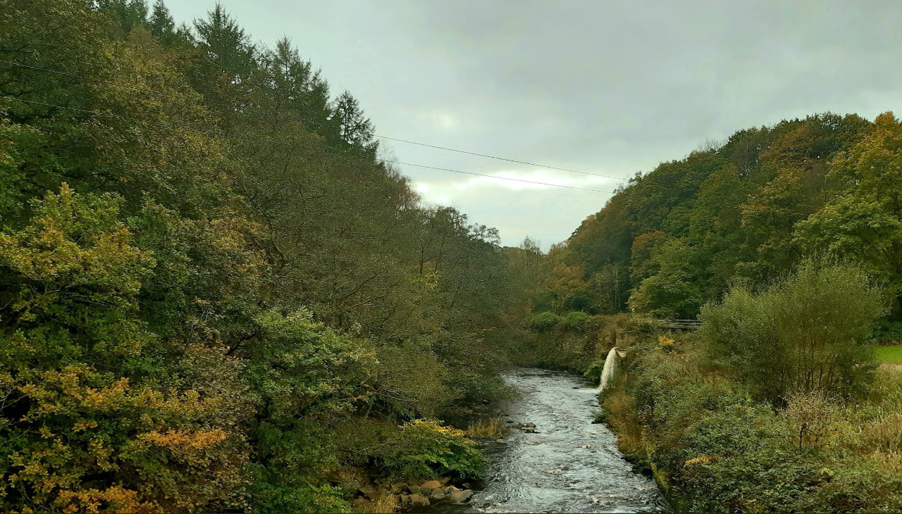The nicest parks according to reviews (Images included)
4.9/5 Werneth Low Country Park
Located in Tameside, this country park is a good place for horse riding, cycling and having a picnic. It is easily accessable with plently of foot paths, mostly wheelchair friendly and 3 car parks. The main appeal would be it's height, it is high enough to be a good look out point to see all of Manchester and even Liverpool on clear days. Credit to David Dixon for this photo of Werneth. This is a link for further information: Tameside.gov
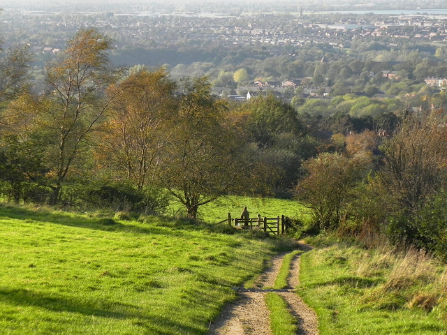4.7/5 Styal Country Park
Located in Wilmslow, this country park is a good place for dog owners and having a picnic. It is easily accessable with plently of foot paths with 1 car park. The main appeal would be it's quarry walk, it is very picturesque and most parts of the walk are forestested or are by the small river Bollin. Credit to mapio.net for this photo of Styal. This is a link for further information: Manchestersfinest.com
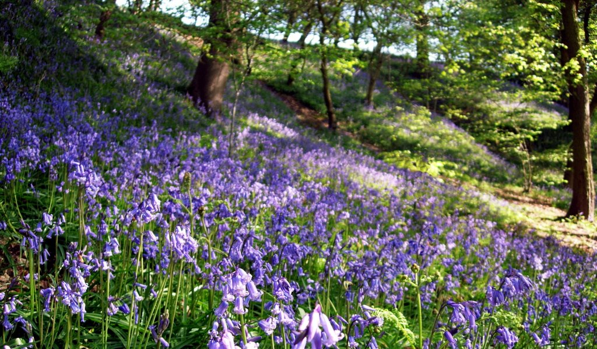4.7/5 Tandle Hill Country Park
Located in Oldham, this country park is a good place for families (especally the kids since it has play areas spread around the area), dog owners, cycling, bird watching and having a picnic. It is easily accessable with plently of foot paths and a bathrooms and cafes, mostly wheelchair friendly and 1 car parks. This is a very large area so is somewhere someone can go plenty of time with seeing all of it which is appealing transport wise, one trip many journeys. Credit to Cath Hebdon for this photo of Tandle Hill. This is a link for further information: Oldham.co.uk
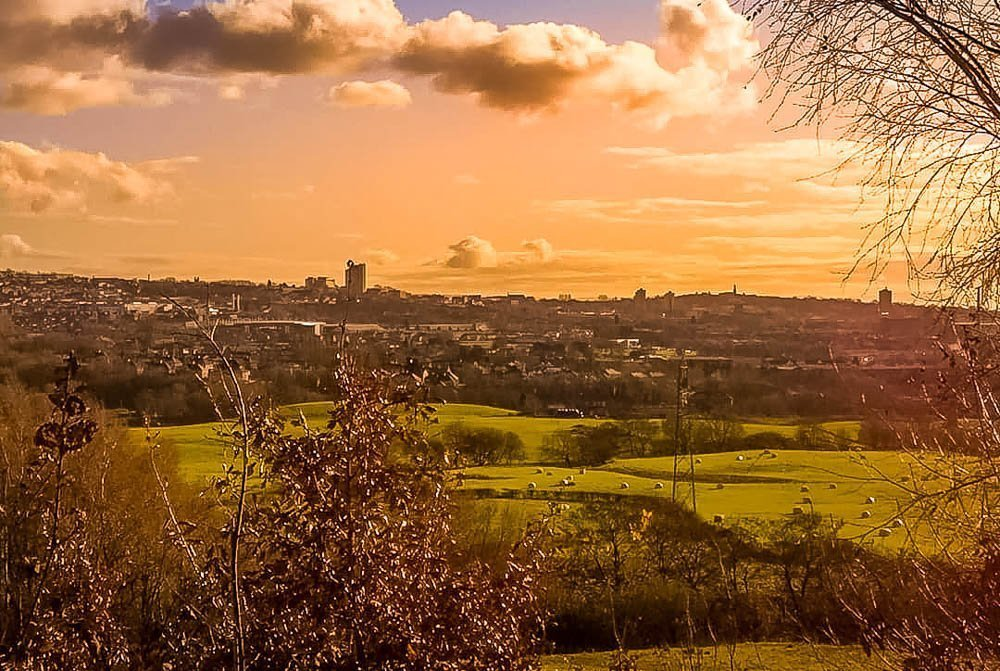4.6/5 Etherow Country Park
Located in Romily, this country park is good for families and dog owners, it has places to eat, such as the Garden Centre which sells ice cream and the Etherow Cafe, activities such as Sailing, it has area has a parking area, completely wheelchair friendly area and a bathroom. The main route is scenic, quite small and circlular, ideal for photography. Near it is a golf course and Brabyns park which is also nice to visit. Credit to Eddie Cooke. This is a link for further information: Etherow.co.uk
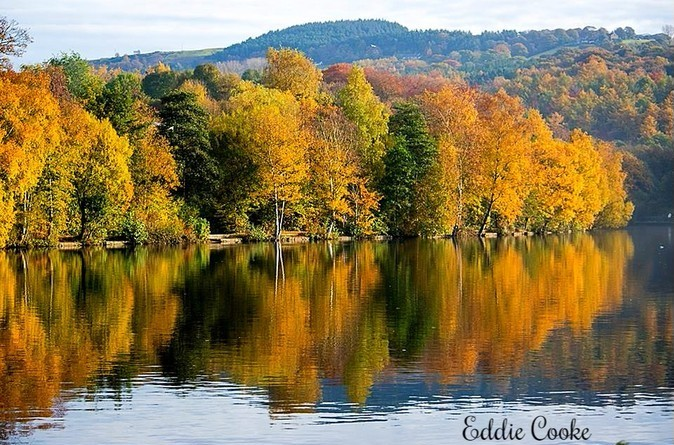4.6/5 Clifton Country Park
Located in Salford, this country park is good for families and dog owners, if you get hungry you will have to leave the country park but only it only a few minutes outside the park are two pub restaurants and a dog friendly cafe, there's activities such as paintballing, it has a parking area that's wheelchair friendly, the park has circlular route with few paths the go off track. There's not much of a main route, but there's still no risk of getting lost, ideal for photography. Credit to Steve Allen. This is a link for further information: Salford.gov
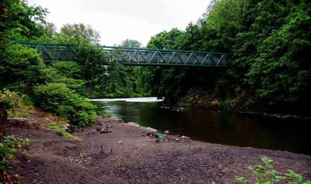4.5/5 Reddish Vale Country Park
Located in Stockport, this country park is good for dog owners and friends, if you get hungry you will have to leave the country park or have icecream but only it only a 8 minutes outside the park is plenty of chippies, pubs, a restaurant and fastfood places, there's a really long stretch of river to walk through, it has area has a parking area and a large horse stables (if you are trusted to do so, you can ride a horse), the park has no main route so if you don't know your way around, you'd get lost. Good for photography. Credit to Pacer25 on TripAdviser. This is a link for further information: ReddishVale.com
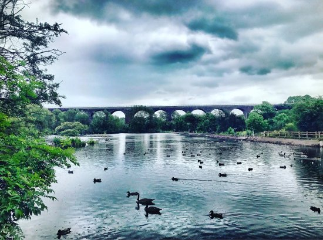Althrough there's so many more parks, country parks, national parks, not every one of them can be mentioned here, it would simply be too much to sort through since Greater Manchester is a large place worth exploring yourself
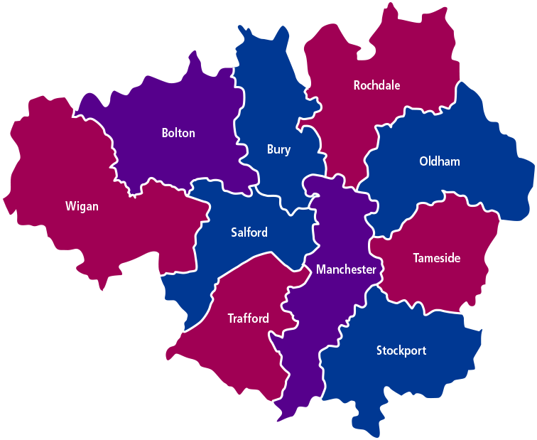About
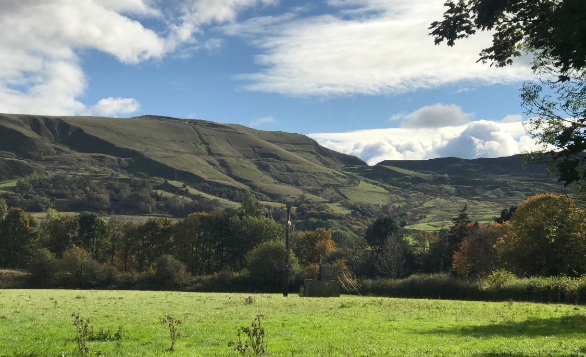This website was made because of Hubbub, an organisation that is built around positive change, there was given 3 topics from Hubbub, this website is focused on Mancunians exploring their local greenspaces, it's good for mental health and it is good for local businesses. This is the link to their site Hubbub.org
Another reason why this website has it's subject around people going outsite, people are statically very lazy, more and more people only go outside when they have to for school or work and it's not to anywhere nice either. I hope that more people know the benefits of going outdoors, for their mental health, physical health